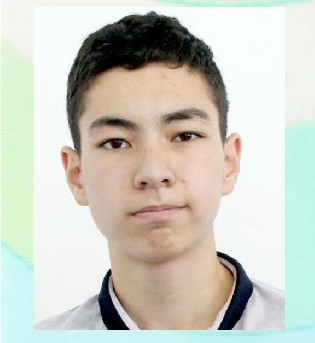

Младший научный сотрудник проекта
Абдикенов Нуржас Нұрсабитұлы
Сбор и анализ данных для экспериментальных выборок проекта. Работает над подготовкой текстовых и аудиоматериалов, поддерживает аналитические стенды.

Статус: младший научный сотрудник проекта.
Образование: бакалавр «Анализ больших данных», магистрант «Computer Science and Engineering» (Astana IT University).
Краткое резюме. Абдикенов Нуржас Нұрсабитұлы — магистрант Astana IT University, специализируется на анализе данных, подготовке датасетов и формировании отчётности по текущим экспериментам проекта.
Роль в проекте. Сбор и структурирование мультимодальных данных, их предварительная обработка и передача аналитической группе для обучения моделей.